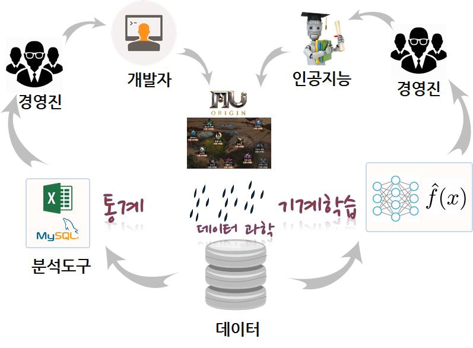

머신러닝과 제4차 산업혁명
학습 목표
- 지난 10년간의 변화를 살펴본다.
- 10년간의 변화 내면의 패러다임 전환을 이해한다.
- 기계와의 경쟁을 촉발한 혁신을 살펴본다.
1. 지난 10년간의 변화
2008년 금융위기 이후 JP모건, 메릴린치, 시티, 골드만삭스 등 금융의 시대는 저물고 미국 4인 구글/아마존/페이스북/애플, 중국 알리바바로 대변되는 경제주체가 새로운 대안으로 주목을 받고 있다. 경영과 경제, 자본으로 무장한 금융 패러다임은 소프트웨어/데이터/인공지능 과학기술로 무장한 신흥 강호를 만나 고전하고 있으며, 이들은 핀테크라는 이름으로 금융회사 본진까지 밀어부치고 있는 상황에 직면하고 있다.
이러는 와중에 국내는 전자의 삼성, 기계의 현대, 통신의 SK, 화학의 LG 등 사일로(Silo) 수직계열화 방식으로 각기 사업 영역을 석권했고 성장의 한계에 봉착하자 중소기업, 재래시장 등 과거 쳐다보지 않던 업종으로 영역을 확대하는 한편, 재벌중심 경제체계는 정부의 힘을 얻어 국가차원에서 농림수산업을 내주고 자유무역 FTA를 무기로 별다른 혁신없이 고속 성장을 이어갔다. 하지만, 결과는 양극화 심화로 경제 및 산업의 활동성은 눈에 띄게 낮아졌다.
1997년 IMF 위기, 2008년 금융위기, 그리고 또다시 10년마다 찾아오는 위기에 아직 문제에 대한 진단도 제대로 이루어지지 않은 상태로 어떻게 되겠지라는 안일한 자세로 금쪽 같은 시간이 지나가고 있다.
철강에서 자동차까지 수직계열화를 이룩한 현대자동차를 비롯하여 유사한 전략을 취하고 있는 삼성, LG, SK 과 대한민국은 이제 미국 구글/페이스북/애플/아마존, 독일 지멘스, 일본 소프트뱅크, 중국 알리바바로 대표되는 글로벌 플랫폼 기업의 손쉬운 먹이감으로 전락했지만 이를 타개할 묘책을 찾아내지 못하고 부심하고 있다. 이와 같은 위기의 내면에는 “저녁이 있는 삶”이 던진 패러다임의 전환이 내재되어 있다.

2. 지난 10년간의 패러다임 전환
미국, 독일, 중국, 일본 모두 글로벌 플랫폼으로 서로 자리를 매기려고 경쟁을 하고 있고, 이 경쟁에서 낙오하는 국가와 기업 모두 치명적인 상처를 입을 것은 자명해 보인다. 하지만 그 이면에는 인간의 일을 대신하는 기계(인공지능으로 무장한 컴퓨터 로봇)와의 치열한 경쟁이 앞으로 수십년 동안 지속될 것으로 예측된다.
농업사회에서 산업사회로의 성공적인 전환을 이룬 배경에는 영국에서 시작된 수학을 보통교육으로 누구나 배울 수 있도록 추진한 것이 그 당시 산업과 사회에 필요한 인재를 키울 수 있게 만들었다. 이를 통해 연역 사고체계, 수학적 사고(Mathematical Thinking) 를 발판 삼아 혁신을 영국이 세계의 중심이 되었다. 귀납적 사고 체계 근간을 이루는 통계적 사고(Experimental Thinking) 는 2차 세계대전에서 미국이 승리를 이루는데 중요한 역할을 했다. 그러는 사이 컴퓨터는 수학적 사고와 통계적 사고를 공학적 가치와 접목한 컴퓨팅 사고(Computational Thinking) 라는 틀로 구체화시켜, 구글/페이스북/애플/아마존의 든든한 인적 자본을 구축하게 되었다.
수학적 사고, 통계적 사고, 컴퓨팅 사고를 가장 잘 융합하고 이를 대규모로 산업화한 구글/페이스북/애플/아마존은 경쟁적으로 인공지능을 만들어 내면서 과거 자본주의 10%:90% 사회를 거쳐, 신자유주의 1%:99% 사회를 거쳐, 알파고 이후 0.1%:99.9%의 사회로 극단적으로 불평등한 시대로 접어드는 것을 가속화 시켰다.
이제 단순반복적인 직업은 기계가 하고 창의적이고 추상적인 직업은 사람이 전담한다는 이분법은 무너지고 있으며 기계가 인공지능을 주입받아 거의 모든 직종에서 사람의 일자리를 위협하면서 새판을 짤 것을 대한민국 뿐만 아니라 전세계적으로 요구하고 있다.

3. 기계와의 경쟁
양극화, 보호무역, 기계와의 경쟁, 100세 시대, 전염병 등 지금까지 경험한 적 없는 새로운 상황이 수시로 엄청난 속도로 다가올 것이다. 이제는 사람과의 경쟁은 무의미하다. 기계와의 경쟁을 준비할 수 있는 새로운 가치체계가 필요하다. 새로운 인적자원은 과거 시험중심의 기계가 잘하는 것을 사람이 더 잘하고, 이미 만들어진 체계를 잘 지켜내는 인적자원을 키워내는 것이 아니라, 수학적 사고, 통계적 사고, 컴퓨팅 사고를 갖추고 지금까지 어느 누구도 푼 적이 없는 문제를 슬기롭게 나갈 수 있고, 이를 지속적으로 유지해 나가는 인프라가 필수적이다.
3.1. 과학기술의 의미 1
세계은행(World Bank)과 한국개발연구원(KDI)은 약 2년여 기간의 공동연구를 통해 1960-2005 년간 한국 경제발전 과정에 관한 보고서를 출간했다. 경제성장이 지속되기 위해서는 생산성 증가가 대단히 중요하고, 1960년 이후 한국경제의 성공은 광의의 지식축적에 기인한 것으로 1960-2005년 사이 한국의 실질 1인당GDP의 75%가 광의의 지식축적에 기인한 것으로 분석했다.
경제발전단계에 따라, 교육 및 인적자원 개발 확대, 과학기술투자, 정보통신 인프라 확충을 통해 지식경제(Knowledge Economy)로의 전환을 이루고 괄목할만한 경제발전을 이룬 것으로 보고서는 적고 있다.

3.2. 과학기술의 진화 2
고 짐 그레이 박사 바다에서 실종되기 전에 주장했고, 사후 책으로 출간되어 인터넷에서 무료로 다운로드 받아 읽어 볼 수 있다.
모든 과학에서 데이터는 기하급수적으로 증가하고 있고, 거의 모든 과학은 데이터 주도(Data-driven) 현상이 나타나고 있다. 물리학과 생명과학이 통계와 컴퓨터 과학의 빅데이터를 통한 수렴현상도 심심치 않게 볼 수 있다.
- 실증 과학(Empirical Science): 수천년에 걸쳐 자연현상을 실증 과학의 시대.
- 이론 과학(Theoretical Science): 수백년에 걸쳐 모형과 일반화를 통한 이론 과학의 시대.
- 계산 과학(Computational Science): 수십년에 결쳐 복잡한 현상을 모의실험을 컴퓨터를 사용한 계산 과학 시대.
- 데이터 집약 과학(Data-Intensive Science): 현재는 이론, 실험, 통계를 사용한 계산 결과를 통합하는 데이터 집약 과학 시대.
과학이 가정-주도(Hypothesis-Driven) 에서 데이터-주도(Data-Driven) 발견 으로 급격히 이동 중으로 전혀 새로운 도전에 직면하고 있다.
통상, 데이터를 수집하고, 발견과 분석을 수행하고 이를 발표하는 과정을 거친다. 하지만, 기하급수적으로 증가하는 데이터에 의해 다양한 도전과제가 산적해 있다. 과거에는 데이터를 수집하고 분석과 발견 과정을 거쳐서 출판 게시했다면, 다양하고 휘발성이 강하고 매우 큰 데이터를 수집하고 나서 인터넷에 게시하여 공개하면 데이터 분석과 탐색을 통해 정보를 추출하고 모형을 개발하는 것으로 과정이 변경됨.
- 기하급수적인 데이터 증가: 분산된 환경에서 데이터 수집과 급증하는 데이터 크기.
- 새로운 분석 패러다임: 데이터 연합체와 데이터 분석으로 이동.
- 새로운 게시 패러다임: 과학자가 점점 출판업자와 전시 책임자같은 큐레이터와 같이 되어감.

3.3. 데이터 과학
통계는 과거 통계 팩키지(SAS, SPSS, 미니탭 등)에 데이터를 넣어 돌리고 결과를 해석하는 학문으로 쉽게 생각하기도 한다. 수학적인 면에서 보면, 인문학도가 보면 어려운 수학이지만 수학을 전통으로 하는 분들이 보면 쉽게 보이는 것도 사실이다. 하지만, 통계은 데이터에 기반해서 귀납적 사고방식을 확률로 표현하는 어찌보면 쟈넷윙 박사가 정의한 컴퓨팅 사고(Computational Thinking) 에 따르면 수학적 사고(Mathematical Thinking) 와 더불어 인간 사고체계의 큰 기둥을 이루고 있는 실험적 사고(Experimental Thinking) 체계다.
수학 전공자가 수학적 사고를 통달하는만큼 실험적/통계적 사고를 통달하는 것은 쉬운 일이 아니다. 더불어 통계적으로 자료를 분석하고 모형을 개발하는데는 상당한 전산적 지식이 요구되고 있으며, 이를 코드로 작성하는데도 상당한 공학적인 지식과 경험이 필요하다.

이와 더불어 데이터를 잘 분석하고 코딩하여 실제 데이터 제품으로 만들어 알고리즘을 구현하거나, 다양한 보고서(pdf, 워드, 슬라이드, HTML)를 만들어낼 수 있어야 하는데 이를 위해서는 상당한 실무지식이 필수적으로 동반되고 이에 수반하는 경험과 지식이 통계적 컨설팅 기법이다.

4. 데이터 과학 사용법
뮤오리진 등 디지털 콘텐츠를 개발하는데 상당한 소프트웨어 기술이 필요하다. 하지만 MMORPG 온라인 디지털 콘텐츠는 다른 디지털 콘텐츠와 비교하여 훨씬 더 많은 양질의 데이터를 뿜어내고 있다. 하지만, 전통적인 RDBMS, 엑셀로 대표되는 스프레드쉬트 아키넥처를 가지고 이를 해결해 내는 것은 쉽지 않다. 우선, 엄청난 양의 데이터와 다양한 데이터를 RDBMS가 담아내기가 쉽지 않다. 이유는 RDBMS가 이런 목적으로 처음에 만들어진 것이 아니기 때문이다. 이유가 여러가지로 RDMBS에 데이터를 담아내고 이를 엑셀로 분석하여 결과를 경영진에 보고하면 경영진은 다시 이를 디지털 콘텐츠에 반영하도록 개발자에게 요건을 주고 이를 소프트웨어 구현하여 나가는 방식으로 하루 업무, 주간업무, 월간업무, 연간업무를 진행해 나간다.
하지만, 데이터의 양과 종류가 늘어나고 이에 대한 대응을 좀더 저렴한 비용으로 정확하고 신속하게 대응하기 위해서는 기계학습을 통해 예측력 높은 알고리즘을 개발하여 바로 적용할 수 있는 대응체계가 필요하다. 데이터를 분석하고 기계학습을 통해 사람과 기계 모두 만족시킬 수 있는 방법이 데이터 과학 이다.
